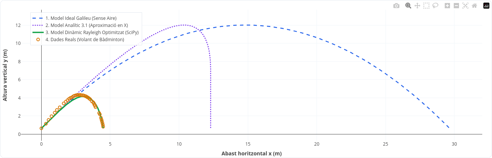
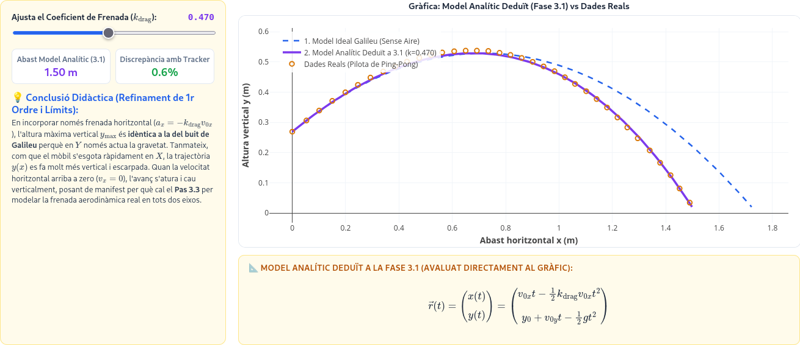
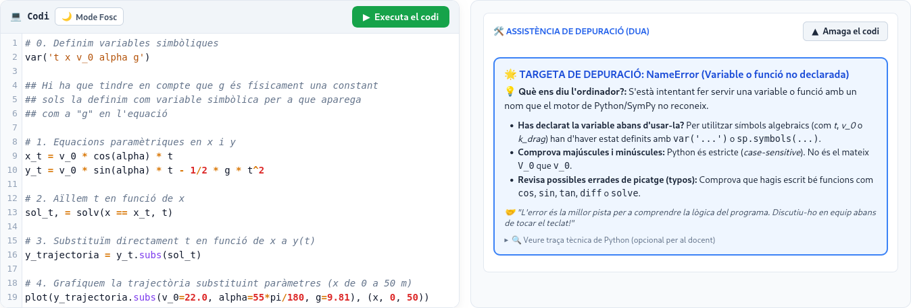

Proposta d’Innovació Didàctica
Casimiro Victoria Castillo
Màster en Professor/a d’Educació Secundària
| Fase UMC | Nivell Herron | Acció de l’Alumnat a l’Aula |
|---|---|---|
| USE | Nivell 1 | Executa simulacions interactives (@interact) dissenyades pel docent. |
| MODIFY | Nivell 2 | Modifica paràmetres físics i equacions sobre Codi Esquelet (Skeleton Code). |
| CREATE | Nivell 3 | Construeix un assaig computacional de contrast teòric-empíric. |
.csv amb pandas.


TFM Física i Química · UV | Casimiro Victoria Castillo